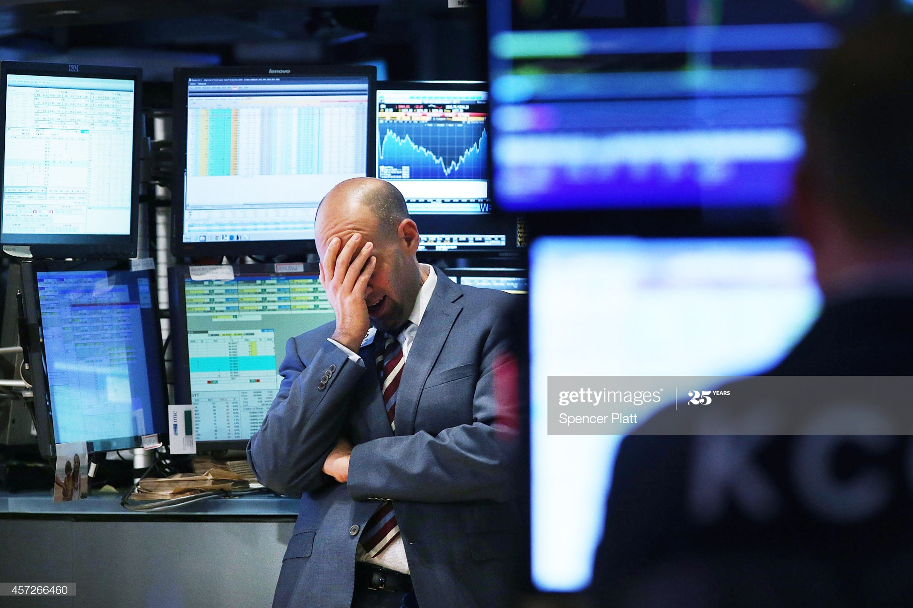

Early Internet culture was undefined, and so people at the time were conflicted as to whether or not advertisement should be allowed on it. David and Jerry decided to allow advertisements to run on their website, despite their concern that it could lead to their users feeling alienated or even that their users would rebel. The advertisements ended up not at all discouraging Yahoo!’s users from using their site.
Google's success originated in one simple insight from its founders, Larry Page and Sergey Brin. They realised in the late 1990s that the sprawling, chaotic mass of material that was cascading onto the world wide web could be tamed by ranking search results according to their popularity. Early part of 1999, it seemed like the only way to survive for google was to follow other search engine portal to put banner ads and pop ups which hurts the quality of the user experience. But google at the time did their best to take a different approach. Advertising was desired to be more user friendly and neatly presented.
Bill Gross was the one responsible for these web developments of user-friendly advertisement that led google to beginning of success. He was the founder of Idealab. Search engine is the world’s most powerful market research tool. Key words are the future of the business. The words that user’s type are insanely valuable asset to sell to advertisers. He launched a website named overture based on keywords and sponsored links. Instance success was brought by this certain product which made revenue of billions.
Breakthrough of technology attracts investors for gains which led to a crash. Jeff Besos called Amazon as world’s largest bookstore using his environment as an advantage. Stocks skyrocketed with hoping to benefit from the company’s potential. Tremendously controversial. Most of the profits were sacrificed for the company’s growth due to Besos’s strategy was to expand his business as fast as he could. Convinced customers to trust them with credentials and information. Mathematicians were hired to develop to encryption. Several years were put into digital encryption to be used like padlock boxes. Public key is used for rendering secret data that has been set to the sender. The private key is used by the receiver to take the encrypted data and decrypt them when needed. Ebay was used by collectors around the world. Stock soared on the opening day as an IPO. Some financial experts pointed out amazon will double their income within a year. Dot com bubble has started at the same time.
Wall street was blamed for the immense amount of loss of the economy. Many Ecommerce that did survive however, was able to become the leading companies of the sector. Ebay and Amazon was early and aggressive therefore they succeeded. Fundamentally they took different approach to this business model than what the textbook says.
the major difference between web 1.0 and web 2.0 is that web 2.0 websites enable users to create, share, collaborate and communicate their work with others, without any need of any web design or publishing skills. These capabilities were not present in Web 1.o environment. Nowadays, the way web users are getting information has drastically changed. Today, users use content they are specifically interested in, often using Web 2.0 tools.
The changes include newer tools such as Google AdSence, Flickr, BitTorrent, Napster, Wikipedia, Tagging, Cost per click implements, Blogging, Search Engine Optimization, etc. The advantages are that Web 2.0 is available and fast at all times, more user friendly, variety of media, real-time communications etc.
Controlled by networks we are being manipulated how to get information and communication and how much to pay for them as well. The web medium is changed and shaped by the people. Social medium is connecting individuals in a way nothing has able to do before. The TV industry was impossible to get in to in the past but Youtube changed everything by enabling anyone to broadcast themselves however they want.
Newspaper became less and less significant and their business model was being questioned for effectiveness. Cyberspace belongs to us and accessing media be accessible and feel good to interact with. Common person as the author. The general direction of changes of the web is to be faster, bigger, more social, more consuming, and more enveloping.